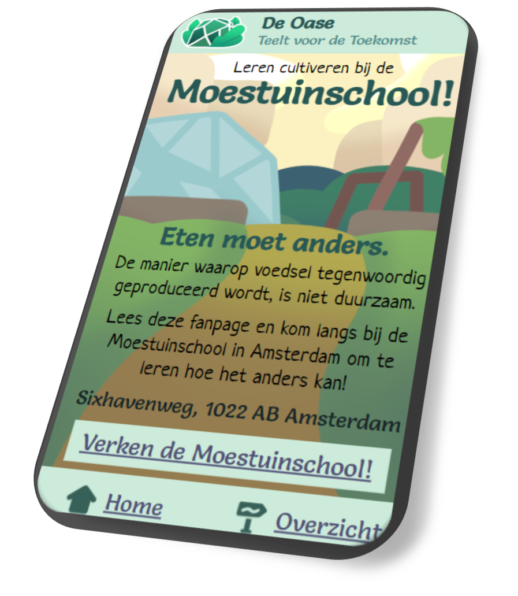

Interactieve producten
Ik heb altijd al van interactieve producten zoals spelletjes en ingewikkelde sites gehouden, en mij willen verdiepen in hoe ik ze zelf kan maken. Ik experimenteer er tegenwoordig veel mee, en verbreed graag mijn kennis erover!
De Oase
Rol: Volledig zelfgemaakt - Februari 2024
Een webapp voor op de mobiele telefoon, waarop je informatie kan vinden over de Moestuinschool in Amsterdam. De site functioneert als reclamefolder, om mensen aan te trekken. De site is te vinden op GitHub.

Docent van de Dag
Rol: Volledig zelfgemaakt - Maart 2024
Een webspelletje gemaakt voor mijn HVA-klasgenoten, waarin je zogenaamd elke dag een niewe docent in elkaar moet zetten aan de hand van cosmetica. De site is te vinden op GitHub